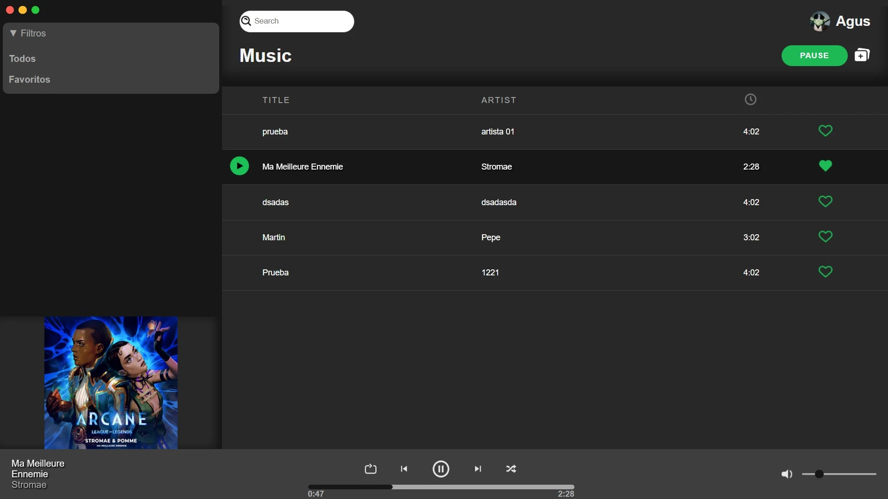
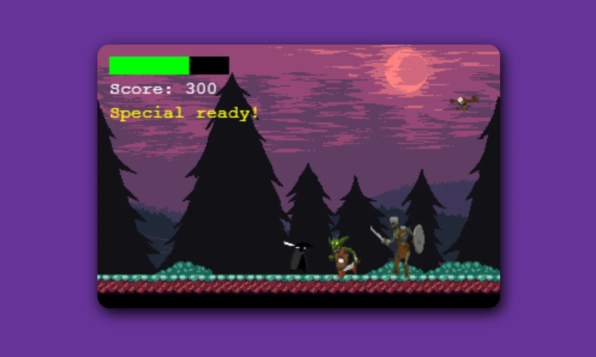
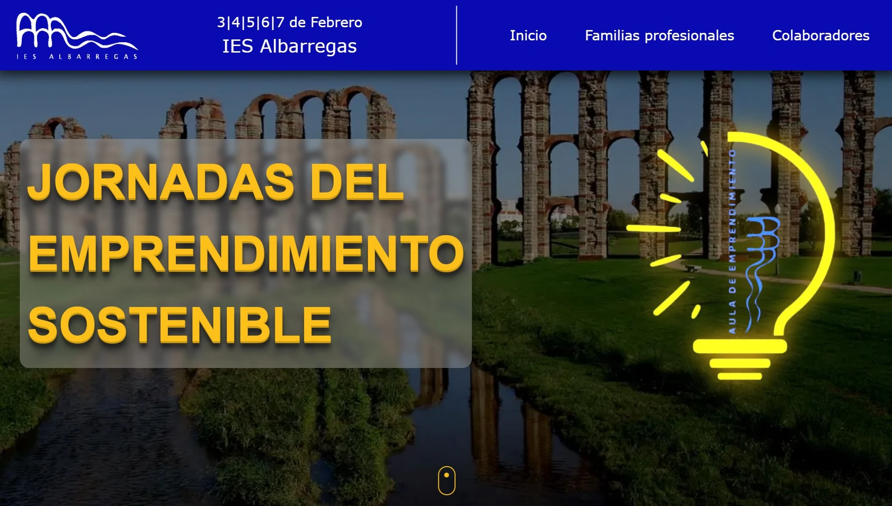
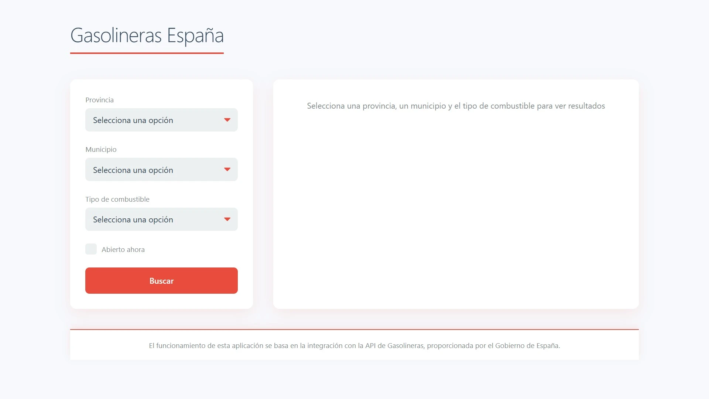

M
i
s
P
r
o
y
e
c
t
o
s
Una colección de proyectos donde exploro ideas, tecnologías y soluciones creativas.
Cada uno de ellos representa un reto, una historia y una evolución en mi camino como desarrollador.

FEATURED PROJECT
Spotify Clon
Reproductor de música con una interfaz gráfica basada en el famoso Spotify.
Ahora puedes disfrutar de tus playlists sin anuncios y sin miedo a que te pida actualizar a Premium.
HTML
CSS
JavaScript

GAME DEVELOPMENT
Monster Slayer
Oleadas de monstruos, una katana y reflejos de ninja.
Corta, esquiva y sobrevive en este caótico minijuego hecho con Phaser 3.
HTML
JavaScript
Phaser

COLLABORATIVE PROJECT
Web de Emprendimiento
Participación en el desarrollo de la web para las Jornadas de Emprendimiento Sostenible 2025 del I.E.S. Albarregas.
HTML
Astro
Tailwind

APP DEVELOPMENT
App de Gasolineras
Aplicación que muestra en tiempo real los precios de combustible de las gasolineras cercanas a tu ubicación,
usando la API pública del gobierno de España.
React
Node.js
Google Maps API